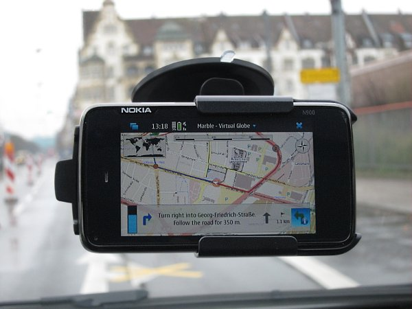

Marble 1.0 is going to be released on January 26, 2011. To be able to provide a stable release, we're looking for testers of our development packages. Thanks for your time and any feedback you provide: Via mail to marble-devel@kde.org, via bug reports at bugs.kde.org or via IRC in #marble at Freenode.
These are development packages which have not been thoroughly tested and may harm your system. Marble is distributed under the LGPL. Please read the terms and conditions.
You can install Marble conveniently from your Nokia N900 using a one-click installer: Open this website with the browser on your N900 and install the packages by clicking on this link. If you need further instructions, please follow this tutorial.

| Type | Description | Status |
|---|---|---|
| Bug | The routing dialog has to be opened at least once before it is possible to calculate a route. | Fixed in 1.0 Beta 2 |
| Bug | A route restored from the last session is only fully shown when the routing dialog was opened at least once. | Fixed in 1.0 Beta 2 |
| User Interface | The vertical space in the routing dialog is too small when several via points are used or several search results turn up. | Fixed in 1.0 Beta 2 |
| User Interface | The progress indicator suggests a route is ready too early (when Marble is still busy) | Fixed in 1.0 Beta 2 |
| User Interface | When upgrading from Marble 0.10 (KDE 4.5), a black frame is shown on the left | Open. As a workaround you can reset Marble to default settings by deleting /home/user/.config/kde.org/Marble Desktop Globe.conf |
| User Interface | When upgrading from Marble 0.10 (KDE 4.5), two info boxes overlap on the bottom right of the map | Open. As a workaround you can reset Marble to default settings by deleting /home/user/.config/kde.org/Marble Desktop Globe.conf |
| User Interface | Too many icons with arrows on the bottom of the screen are confusing for first time users. | Open |
Maintained by the Marble developers.